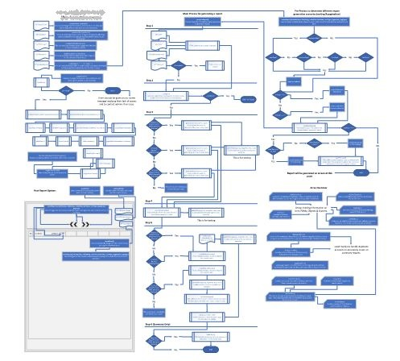

Portfolio

Report Generator Project
A project based on Salesforce, using HTML, CSS, JavaScript and SOQL Queries.

MFA Project
A project based on preparing a company to use and enforce Salesforce MFA.

Computer Science Project
A research and development project based around web development methods.